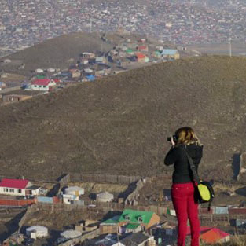
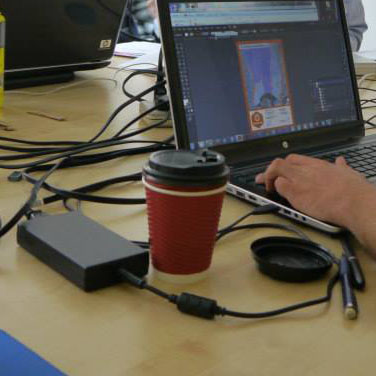

At the Office of Foreign Disaster Assistance, I provide geospatial and cartographic services to USAID/OFDA's humanitarian work in the form of maps and graphics, spatial analysis, and technical team projects. In particular, I lead mapping decisions, research, and production for any needs in Southern and Western African Nations (SWAN). Additionally, I am in charge of new design decisions on my team, with a mission to create better products that are not only aesthetically enhanced, but also are easier to read and therefore understand better in OFDA's fast paced decision making environment.
Disasters Strike
Redesign: Program Maps
Aesthetic Redesign: Map Booklet
Mongolia Blog
A PERSONAL BLOG ABOUT MAPPING IN MONGOLIA
Excerpt: "...The mayor of the city of Ulanbaatar, Mongolia wants to have these 100s of maps to reference when he begins budget planning in a couple
weeks: budget plans that will continue for the next 5 years. aka, Budget plans that can make or break the rural,
poor, shanty gers in question. It isn’t just that you need to make them look pretty...."

What, How, Huh?
How I stumbled upon mapping gers Click here to read.

Education
"Teaching Assistance experience: on crack" Click here to read.
Behind the Mapping
Organization, work flows, data management & more Click here to read.
About
I'm a detail oriented designer, cartographer, geographer, and programmer experienced in and passionate about creating
visual stories in a fast paced environment through geo-visualizations. Whether on my own or with a team, I thoroughly enjoy finding imaginative and creative solutions
for all design requests, from exclusively print products to more complicated interactive, web-based work.
2008 - 2014
Academic Career: BS, BA, and MS
I spent 6 wonderful years studying at the University of Wisconsin-Madison - triple majoring in Geography w/ Emphasis on People/Environment Interactions,
Cartography & GIS, and Spanish Linguistics for my undergrad, followed by a MS in Cartrography & GIS at the University of Wisconsin-Madison. During those 6 years,
I produced a wide array of projects, including but not limited to print and interactive maps, posters, responsive
web sites, and coding programs for very many class labs and projects.
April 2012 - May 2013
A Door Opens: UW-Madison Cartography Lab
My interest in Geography and Cartography already was well established as a senior at UW-Madison, so much so that I decided to go to graduate school (as mentioned above)! Before
undergraduate graduation, I was given the opportunity to work for the UW-Madison Cartography Lab... which became my new Cartographic home for the next few years. There, I served the geographic analysis
and design needs of the UW system, government agencies, authors and publishers, as well as many commercial clients. I also provided complete graphic design services for print brochures and books,
online maps and websites, and interactive maps.
April 2012 - May 2013
The History of Cartography Project
Under UW-Madison Cartography Lab employment, created any necessary graphic designs for the History
of Cartography Project’s 6th book volume, ranging from maps to diagrams and infographics. www.geography.wisc.edu/histcart/series.html#v6
September 2013
Independent Contractor, The Asia Foundation: Cartographic Design Consultant
For a fast paced 10 days I was the cartographic design expert, leader, and teacher, while also giving cartographic technical support for The Asia Foundation during formal and
informal working meetings with government, private sector, and non-governmental leaders, and technical staff. I helped o make maps of the government’s data to
visually communicate the needs of the impoverished ger communities, while also restructuring the production process. Check out the blog I have linked on this site for more information!
August 2013 - May 2014
UW-Cartography Lab: Project Assistant
In August, I took a step up and became the Project Assistant for the UW-Cartography lab, where I managed and led multiple projects requiring geographic analysis and
design needs of the UW system, government agencies, authors and publishers as well as many commercial clients,
in addition to any other regular Cartography Lab needs, as mentioned below. Additionally, also trained other cartographers as needed.
April 2015 - present
MacFadden for USAID/OFDA
In April I packed my bags and left Wisconsin and moved to DC, where I currently provide geospatial services to USAID/OFDA's humanitarian work in
the form of maps and graphics, geospatial analysis, and technical team projects.
I also collaborate closely with OFDA, peers in U.S Government agencies, the humanitarian community, the academic sphere, and the private sector.
Additionally: recreating many of OFDA's map specs to not only enhance the products aesthetically, but aid in faster decision making through
better visual understanding of underlying data through the design changes.
Future
adventures
await!
100 Most Endangered Species
Infographic showing quantity of 100 most endangered species globally, as well as portraying what endangered species are located within each country.
Created in order to experiment and explore the realistic paint brushes and styles within Corel Draw 12.
Krill and Whale Concentration
Created for the UW-Madison Cartography Lab
Tangled Roots
Map of the Appalachian Trail, created for the UW-Madison Cartography Lab
Indian Border Dispute
Created for the UW-Madison Cartography Lab
Japanese Roads & Railroads: 1800s-1900s
This image shows a compilation of a map series that was published in Volume 6 of the History of Cartography Project
Cite University
Created for the UW-Madison Cartography Lab
Surveys
Created for Volume 6 of The History of Cartography Project
Satellites
Created for Volume 6 of The History of Cartography Project
Syria Program Map
Restyling of old and cluttered symbol maps brought about this new map spec for this kind of map. See CV for link to talk about the changes. Created for USAID/OFDA (under MacFadden)
Map Booklet Series: Chile
An aesthetic overall of 34+ countries in the Latin America & Caribbean Region, created for USAID/OFDA (under MacFadden)
Dominica Disaster Declaration
Time crunch map created for humanitarian aid decisions for Tropical Storm Erika destruction in Dominica, created for USAID/OFDA (under MacFadden)
Palette Tutorial
Visual aid created for map making color choices - harmony and visual hierarchy when overhauling USAID/OFDA map styles (under MacFadden)
International Learning Community Logo
When the ILC of UW-Madison saw my hand painted watercolor art of something similar, they requested
a version that could be used as a logo. This PNG, created using a tablet and Photoshop, is the result.
50 Years of Change
2013 NACIS Narrative Map Winner
Built with d3.js, this interactive visualization
shows the change in LGBT related laws and issues marriage, over the past fifty years. This was a team project
for the final requirement of an upper-level class in geovisualization and interactive cartography for the web.
Built with d3.js, this interactive visualizations shows levels of petroleum consumption per state. This was an individual project
for an upper-level class in geovisualization and interactive cartography for the web.
This interactive map shows their slow recovery in this area between 1999 and 2008.
Made with Leaflet.js as an individual project for an upper-level class in geovisualization and interactive cartography for the web.
The Chernobyl Disaster
2010 NACIS Interactive Map Winner
Built with Flash, this interactive visualization shows maps,
information, and photography that discuss the aftermath of The Chernobyl Disaster. This was a team project for
the final requirement of an upper-level class in geovisualization and interactive cartography for the web.
Disaster Planning: an Example
The above map was one of many maps I made during the planning stage of OFDA's response for regional drought in Southern Africa,
This particular map helps to highlight the unfortunately terrible drought conditions in Malawi - the lack of water, historical rainfall,
and food insecurities gave my colleagues an immediate story about how bad conditions were in specific areas. Given the former, after this map was produced,
I immediately got requests for the same analysis for three other countries, resulting in a map series for part of the region.
To learn more on the OFDA response and see the current OFDA programming map that I created and update for this response, just click here.
Program Map Redesign
One of the first redesign projects I took on was redesigning the specs for OFDA's program maps. The old design was heavily contrasted and very hard to read at a glance. The new design (snippet of verbal explanation above) allows for important information to come to the fore immediately, through some small visual hierarchy decisions throughout the map. The final redesign aesthetic is showcased in my Maps and Graphics section (Syria Program Map), and I gave a talk about the process of the redesign at the 2015 NACIS conference - the slides of said talk can be viewed here.
Of all the map types that my team creates, this one, while not the ugliest and not the worst, needed the most updating because program maps get sent out the most in terms of daily requests and sheer number of products. Additionally, these are the maps that most often aid people in decision making. So, for me, the primary concern in the redesign was guaranteeing that the map was easy to read at a glance. Basically - the heavy contrast really needed to go. The best part of the redesign was as soon as the new visual hierarchies were redefined for better map reading, the map looked "pretty".
Map Booklet Overhaul
In addition to the Program Map redesign, I also tackled the very old (reference) map booklet design standard. The old aesthetic, for those interested, can be seen in this NACIS 2015 talk. This particular redesign was less a study of determining how to better visualize data and allow for faster and better understanding of the information, but rather a task of creating something as aesthetically pleasing as possible. Each map booklet contains all the countries of specified focus regions within OFDA (for example, the SWAN booklet contains South and West African Nations).
The above image shows the excel spec sheet as well.